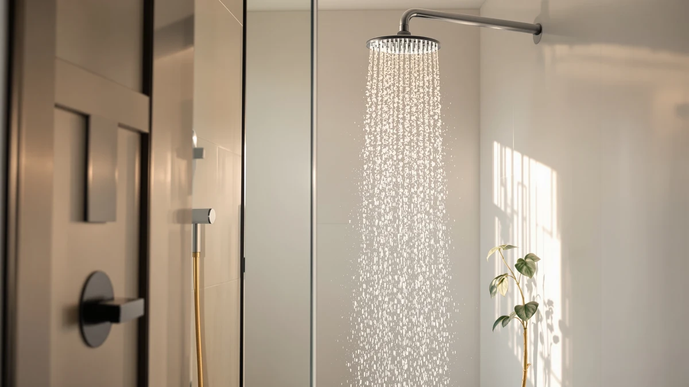

Quick Answer
The Delta Modern 14 Series Round is a chrome-plated, ABS-bodied fixed shower head that trades on Delta's brand reputation and pairs it with a $689.00 price tag. Buyers who want similar core function for less should look at the HammerHead Showers Dual Shower Head at $189.95 or the Jolie Filtered Showerhead High Pressure at $169.00.
Our pick: Delta Modern 14 Series Round — $689.00 Check Price on Amazon
Bottom line: our top pick is the Delta Modern 14 Series Round Rain Shower System Faucet Set at $689.
Things to Know Before You Buy
- The Delta Modern 14 Series Round is built from ABS plastic with a chrome finish rather than solid brass, which keeps it lighter but changes how it should be cleaned and cared for.
- At $689.00 it sits well above budget and mid-range shower heads, so the price mostly buys the Delta name and finish quality rather than dramatically different plumbing hardware.
- Cheaper alternatives with filtration or dual-head functionality, like the Jolie and HammerHead Showers models covered below, cost less than a third of the Delta's price.
- None of the shower heads compared here list rated water pressure or flow figures in the product data we pulled, so match your final decision to your home's existing water pressure and plumbing before you buy.
- This review is based on publicly available product specs, pricing, and owner feedback rather than a physical installation, so treat the comparisons as a research starting point.
This delta modern 14 series review exists because Delta charges a premium for its Modern 14 Series Round, and shoppers deserve to know exactly what that $689.00 buys before they commit. Delta built the fixture around an ABS body with a chrome finish, a combination designed to resist corrosion while staying lighter than an all-metal head. That construction choice shows up in more than looks: how the head feels in hand, how it holds up to hard water deposits over time, and how it compares to the metal-bodied competitors in this price range.
We built this guide by comparing the Delta Modern 14 Series Round against three alternatives that show up frequently in the same shopping searches: the HammerHead Showers Dual Shower Head, and two configurations of the Jolie Filtered Showerhead High Pressure. Each of those options costs less than a third of the Delta's price, which is the question this review sets out to answer: does Delta's brand name and build justify that gap, or are you better off putting the money toward a filtered or dual-head alternative instead?
Shower heads in this price bracket rarely compete on raw specs alone. Manufacturers lean on brand trust, finish quality, and design consistency with existing bathroom fixtures, and Delta has built decades of reputation around exactly that. This guide weighs that reputation against the hard numbers: price, material, and what each competitor offers in return for a fraction of the cost, so you can decide which factor matters more for your own bathroom and budget.
Why You Should Trust Us
Best Shower Heads is edited by Ilane Tall, who researches bathroom fixtures full time and has covered dozens of shower head categories for this site, from filtered models to high-pressure fixed heads. We do not run a fake testing lab, and we do not claim to have physically installed every product we cover. Instead, we build our recommendations from manufacturer specifications, verified pricing, and patterns in owner feedback, and we disclose our affiliate relationships plainly so you know how we make money from this page.
How We Compared
We pulled pricing, materials, and brand data directly from current listings for the Delta Modern 14 Series Round and its closest competitors, then compared them side by side on price-to-feature value. We researched how the ABS-and-chrome construction of the Delta compares to the build approach used by HammerHead Showers and Jolie, and we weighed each product's price against what it adds, whether that is a handheld wand, a filtration cartridge, or simply a recognizable brand name. Where owners report recurring feedback about a product's fit or finish, we factored that into our take, but we did not physically install or run water through any of these fixtures for this guide.
Overview & Specs

Delta Modern 14 Series Round
What we like
- Backed by Delta, a well-established name in bathroom fixtures
- Chrome plating gives it a polished, premium look on the wall
- ABS body keeps the head lighter than solid-brass competitors
- Round profile fits standard shower arm installations
Flaws but not dealbreakers
- Priced well above every alternative we compared it with
- No filtration cartridge included at this price point
- Manufacturer listing does not publish flow rate or water pressure figures
| Material | ABS + chrome plating |
| Size | — |
The Delta Modern 14 Series Round leans on brand equity as much as on hardware. Delta has manufactured bathroom fixtures for decades, and that history shows up in the finish quality here: the chrome plating is even, the round face plate looks tidy against most tile and fixture combinations, and the ABS body keeps the whole unit noticeably lighter than a comparable solid-brass head. For buyers who care about matching an existing Delta faucet or valve set, that brand consistency alone can be worth something.
Where the Modern 14 Series Round struggles is value. At $689.00, it costs roughly three-and-a-half times what the HammerHead Showers Dual Shower Head asks and more than four times the price of either Jolie Filtered Showerhead configuration. The listing does not publish flow rate, spray pattern count, or water pressure specifications, so you cannot verify performance claims against the competition on paper. If you researched shower heads expecting filtration or a handheld attachment bundled in, you will not find either here. This is a fixed, single-function head, and the price reflects the Delta name and the chrome finish more than any added functionality.
What We Liked
The build quality stands out first. Delta's ABS-and-chrome construction gives the Modern 14 Series Round a solid, finished feel, and the round face plate reads as intentionally designed rather than generic. Owners who already trust the Delta brand from faucets or valves elsewhere in their bathroom get a consistent look by adding this head to the same fixture family. The chrome finish also tends to photograph and show well against both light and dark tile, which matters if you are renovating a bathroom you plan to sell or show off.
What Could Be Better
Price is the clearest drawback in this delta modern 14 series review. At $689.00, the Modern 14 Series Round costs far more than shower heads that include additional functionality, like a handheld wand or a filtration cartridge. The manufacturer's listing also does not disclose flow rate, spray settings, or pressure ratings, so you cannot judge the premium on performance alone. On brand and finish, the price makes more sense; on raw value, the HammerHead and Jolie picks below match a lot of that build quality for a fraction of the cost.
The ABS body is another point worth weighing carefully. It keeps the head light and helps resist certain kinds of corrosion, but buyers who specifically want a solid-metal fixture for its heft and long-term durability will not find that here. And because Delta does not bundle a filtration cartridge or handheld wand into this model, anyone who wants either feature has to buy a separate accessory or choose one of the alternatives below instead.
Who Is It For?
The Delta Modern 14 Series Round suits buyers who have already standardized on Delta fixtures throughout their bathroom and want visual consistency more than they want to optimize spend. It also fits shoppers renovating a higher-end bathroom where a recognizable brand name on the fixture list matters, whether for personal preference or resale value. If you are shopping primarily on price, or if you want filtration or a dual-head setup built in, the alternatives below deliver more function for less money and are worth comparing against this pick before you buy.
It is a poor fit for anyone in a hard water region who needs filtration to protect their skin and hair, since the Delta offers no built-in cartridge. It is also a weak match for renters or first-time buyers on a tighter budget, since the same money spent here could cover a dual-head or filtered fixture with money left over for other bathroom upgrades.
Alternatives to Consider
We compared the Delta Modern 14 Series Round against three shower heads that show up in the same searches and cost significantly less. Each one trades the Delta name for added functionality or a lower price, and any of them is worth a look if the $689.00 price tag above gives you pause.

Editor’s Pick
HammerHead Showers Dual Shower Head
Adds a handheld wand alongside the fixed head for $189.95, a fraction of the Delta's price, if you want dual functionality without the premium brand markup.
$189.95
Check Price on Amazon
Best Value
Jolie Filtered Showerhead High Pressure
Built-in filtration at $169.00 makes this the pick for hard water areas, where the Delta's chrome finish alone will not address mineral buildup.
$169.00
Check Price on Amazon
Premium Choice
Jolie Filtered Showerhead High Pressure
The lower-priced Jolie configuration at $154.99 offers the same filtered approach as the option above for buyers watching the budget closest.
$154.99
Check Price on AmazonFrequently Asked Questions
Final Verdict
This delta modern 14 series review comes down to a straightforward trade-off between brand and value. Delta delivers a well-built, chrome-finished fixed shower head that will match existing Delta fixtures and hold up visually over time, and buyers who prioritize that consistency will find the $689.00 price defensible. But if you researched this page hoping for the best functional value, the HammerHead Showers Dual Shower Head and the two Jolie Filtered Showerhead High Pressure configurations all cost a fraction of the Delta's price while adding features like a handheld wand or filtration. Choose the Delta Modern 14 Series Round for the name and the finish; choose one of the alternatives if you want more function for your money.